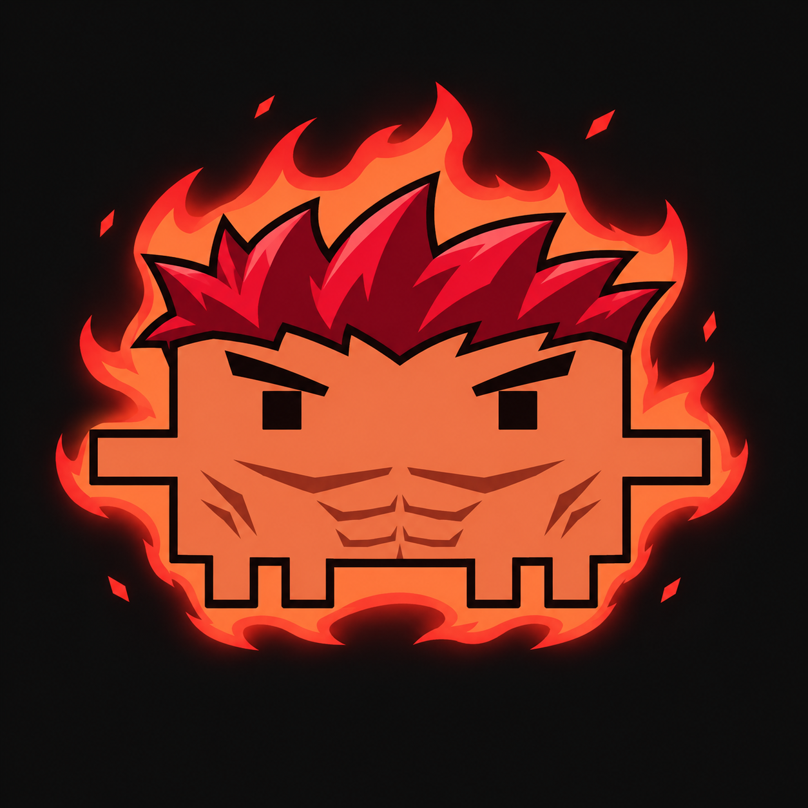

Kéo ảnh trong thư mục này vào ô chat, dán prompt. Tên ảnh ghi trong từng ô. Tạo xong lưu về art/saiyan/web/out/ đặt tên kiểu claude-medium.png, codex-max.png.
1. Claude - sửa trên ảnh (đính kèm đúng ảnh trong ô)
Claude · medium

Keep the creature's body EXACTLY as in the attached image: same body, muscles, arms, legs, eyes, black outline, size and position. Change ONLY the hair and the effects described here. Keep the plain flat #0E0E0E background and the same style. Hair: sharper spiky hair in a DEEP DARK GOLD. Effects: only a thin golden outline glow and 2-3 tiny blue-white electric sparks near the hair. No flames.
Claude · high
Keep the creature's body EXACTLY as in the attached image: same body, muscles, arms, legs, eyes, black outline, size and position. Change ONLY the hair and the effects described here. Keep the plain flat #0E0E0E background and the same style. Hair: very LONG golden-yellow spiky mane flowing down behind the body almost to the ground, no eyebrows. Effects: only a thin golden outline glow and 4-5 small yellow electric sparks. Restrained.
Claude · xhigh
Keep the creature's body EXACTLY as in the attached image: same body, muscles, arms, legs, eyes, black outline, size and position. Change ONLY the hair and the effects described here. Keep the plain flat #0E0E0E background and the same style. Hair: SHORT spiky CRIMSON RED hair. Effects: a soft red-orange divine flame aura and a few red embers floating.
Claude · ultracode
Keep the creature's body EXACTLY as in the attached image: same body, muscles, arms, legs, eyes, black outline, size and position. Change ONLY the hair and the effects described here. Keep the plain flat #0E0E0E background and the same style. Hair: SHORT spiky SILVER-WHITE hair; eyes glow silver-white. Effects: a tall silvery-white and pale blue flame aura with floating light particles, calm and god-like, the most radiant of all.
2. Codex (GPT) - tạo nhân vật trước, rồi 6 cấp
Codex (GPT) · nhân vật gốc
Design an original mascot: a small charcoal-black rounded cube creature whose face is a glowing white terminal prompt '>_' (the '>' and '_' are its eyes and mouth), tiny stubby arms sticking out left and right, four tiny square legs, a thin teal (#10A37F) rim light. No hair yet, standing calmly. Match the drawing style of the attached image (outline weight, cel shading, background) but NOT its character. 2D anime power-up illustration, thick clean black outlines, flat cel shading with 2-3 tones, no gradients on the body, centred, full body, facing the viewer, fierce determined look. Plain flat solid #0E0E0E background, nothing else, no text, no human, no existing anime character. Square 1:1 with margin around the figure.
Codex (GPT) · low
(ảnh nhân vật gốc vừa tạo)
Image 1 is the mascot, Image 2 is a style reference for the power-up look only. Draw the mascot from Image 1 powering up, same face and colours. Make the body FAT and round. The hair is a big anime power-up hairdo covering the WHOLE top of the head edge to edge - 6 to 8 thick sharp spikes fanning upward and outward, darker shade side and lighter highlight side; never a small tuft or a crown. FAT and simply ROUND body, one even colour, no belly patch. Short spiky GOLDEN-YELLOW hair. A calm thin golden outline glow. No lightning. 2D anime power-up illustration, thick clean black outlines, flat cel shading with 2-3 tones, no gradients on the body, centred, full body, facing the viewer, fierce determined look. Plain flat solid #0E0E0E background, nothing else, no text, no human, no existing anime character. Square 1:1 with margin around the figure.
Codex (GPT) · medium
(ảnh nhân vật gốc vừa tạo)
Image 1 is the mascot, Image 2 is a style reference for the power-up look only. Draw the mascot from Image 1 powering up, same face and colours. Make the body lean and toned with subtle muscles. The hair is a big anime power-up hairdo covering the WHOLE top of the head edge to edge - 6 to 8 thick sharp spikes fanning upward and outward, darker shade side and lighter highlight side; never a small tuft or a crown. Hair: sharper spiky hair in a DEEP DARK GOLD. Effects: only a thin golden outline glow and 2-3 tiny blue-white electric sparks near the hair. No flames. 2D anime power-up illustration, thick clean black outlines, flat cel shading with 2-3 tones, no gradients on the body, centred, full body, facing the viewer, fierce determined look. Plain flat solid #0E0E0E background, nothing else, no text, no human, no existing anime character. Square 1:1 with margin around the figure.
Codex (GPT) · high
(ảnh nhân vật gốc vừa tạo)
Image 1 is the mascot, Image 2 is a style reference for the power-up look only. Draw the mascot from Image 1 powering up, same face and colours. Make the body HEAVILY MUSCULAR - big pecs, six-pack, bulging arms. The hair is a big anime power-up hairdo covering the WHOLE top of the head edge to edge - 6 to 8 thick sharp spikes fanning upward and outward, darker shade side and lighter highlight side; never a small tuft or a crown. Hair: very LONG golden-yellow spiky mane flowing down behind the body almost to the ground, no eyebrows. Effects: only a thin golden outline glow and 4-5 small yellow electric sparks. Restrained. 2D anime power-up illustration, thick clean black outlines, flat cel shading with 2-3 tones, no gradients on the body, centred, full body, facing the viewer, fierce determined look. Plain flat solid #0E0E0E background, nothing else, no text, no human, no existing anime character. Square 1:1 with margin around the figure.
Codex (GPT) · xhigh
(ảnh nhân vật gốc vừa tạo)
Image 1 is the mascot, Image 2 is a style reference for the power-up look only. Draw the mascot from Image 1 powering up, same face and colours. Make the body HEAVILY MUSCULAR - big pecs, six-pack, bulging arms. The hair is a big anime power-up hairdo covering the WHOLE top of the head edge to edge - 6 to 8 thick sharp spikes fanning upward and outward, darker shade side and lighter highlight side; never a small tuft or a crown. Hair: SHORT spiky CRIMSON RED hair. Effects: a soft red-orange divine flame aura and a few red embers floating. 2D anime power-up illustration, thick clean black outlines, flat cel shading with 2-3 tones, no gradients on the body, centred, full body, facing the viewer, fierce determined look. Plain flat solid #0E0E0E background, nothing else, no text, no human, no existing anime character. Square 1:1 with margin around the figure.
Codex (GPT) · max
(ảnh nhân vật gốc vừa tạo)
Image 1 is the mascot, Image 2 is a style reference for the power-up look only. Draw the mascot from Image 1 powering up, same face and colours. Make the body HEAVILY MUSCULAR - big pecs, six-pack, bulging arms. The hair is a big anime power-up hairdo covering the WHOLE top of the head edge to edge - 6 to 8 thick sharp spikes fanning upward and outward, darker shade side and lighter highlight side; never a small tuft or a crown. Hair: SHORT upright spiky bright CYAN-BLUE hair. Effects: a sharp blue flame aura with a white core and glowing blue sparkles. 2D anime power-up illustration, thick clean black outlines, flat cel shading with 2-3 tones, no gradients on the body, centred, full body, facing the viewer, fierce determined look. Plain flat solid #0E0E0E background, nothing else, no text, no human, no existing anime character. Square 1:1 with margin around the figure.
Codex (GPT) · ultracode
(ảnh nhân vật gốc vừa tạo)
Image 1 is the mascot, Image 2 is a style reference for the power-up look only. Draw the mascot from Image 1 powering up, same face and colours. Make the body HEAVILY MUSCULAR - big pecs, six-pack, bulging arms. The hair is a big anime power-up hairdo covering the WHOLE top of the head edge to edge - 6 to 8 thick sharp spikes fanning upward and outward, darker shade side and lighter highlight side; never a small tuft or a crown. Hair: SHORT spiky SILVER-WHITE hair; eyes glow silver-white. Effects: a tall silvery-white and pale blue flame aura with floating light particles, calm and god-like, the most radiant of all. 2D anime power-up illustration, thick clean black outlines, flat cel shading with 2-3 tones, no gradients on the body, centred, full body, facing the viewer, fierce determined look. Plain flat solid #0E0E0E background, nothing else, no text, no human, no existing anime character. Square 1:1 with margin around the figure.
3. agy (Antigravity) - tạo nhân vật trước, rồi 6 cấp
agy (Antigravity) · nhân vật gốc
Design an original mascot: a small Google-blue (#4285F4) sphere creature that floats a little above the ground (anti-gravity), two white oval eyes, a thin orbiting ring around its middle, tiny stubby arms, no legs, a soft shadow below it. No hair yet, standing calmly. Match the drawing style of the attached image (outline weight, cel shading, background) but NOT its character. 2D anime power-up illustration, thick clean black outlines, flat cel shading with 2-3 tones, no gradients on the body, centred, full body, facing the viewer, fierce determined look. Plain flat solid #0E0E0E background, nothing else, no text, no human, no existing anime character. Square 1:1 with margin around the figure.
agy (Antigravity) · low
(ảnh nhân vật gốc vừa tạo)
Image 1 is the mascot, Image 2 is a style reference for the power-up look only. Draw the mascot from Image 1 powering up, same face and colours. Make the body FAT and round. The hair is a big anime power-up hairdo covering the WHOLE top of the head edge to edge - 6 to 8 thick sharp spikes fanning upward and outward, darker shade side and lighter highlight side; never a small tuft or a crown. FAT and simply ROUND body, one even colour, no belly patch. Short spiky GOLDEN-YELLOW hair. A calm thin golden outline glow. No lightning. 2D anime power-up illustration, thick clean black outlines, flat cel shading with 2-3 tones, no gradients on the body, centred, full body, facing the viewer, fierce determined look. Plain flat solid #0E0E0E background, nothing else, no text, no human, no existing anime character. Square 1:1 with margin around the figure.
agy (Antigravity) · medium
(ảnh nhân vật gốc vừa tạo)
Image 1 is the mascot, Image 2 is a style reference for the power-up look only. Draw the mascot from Image 1 powering up, same face and colours. Make the body lean and toned with subtle muscles. The hair is a big anime power-up hairdo covering the WHOLE top of the head edge to edge - 6 to 8 thick sharp spikes fanning upward and outward, darker shade side and lighter highlight side; never a small tuft or a crown. Hair: sharper spiky hair in a DEEP DARK GOLD. Effects: only a thin golden outline glow and 2-3 tiny blue-white electric sparks near the hair. No flames. 2D anime power-up illustration, thick clean black outlines, flat cel shading with 2-3 tones, no gradients on the body, centred, full body, facing the viewer, fierce determined look. Plain flat solid #0E0E0E background, nothing else, no text, no human, no existing anime character. Square 1:1 with margin around the figure.
agy (Antigravity) · high
(ảnh nhân vật gốc vừa tạo)
Image 1 is the mascot, Image 2 is a style reference for the power-up look only. Draw the mascot from Image 1 powering up, same face and colours. Make the body HEAVILY MUSCULAR - big pecs, six-pack, bulging arms. The hair is a big anime power-up hairdo covering the WHOLE top of the head edge to edge - 6 to 8 thick sharp spikes fanning upward and outward, darker shade side and lighter highlight side; never a small tuft or a crown. Hair: very LONG golden-yellow spiky mane flowing down behind the body almost to the ground, no eyebrows. Effects: only a thin golden outline glow and 4-5 small yellow electric sparks. Restrained. 2D anime power-up illustration, thick clean black outlines, flat cel shading with 2-3 tones, no gradients on the body, centred, full body, facing the viewer, fierce determined look. Plain flat solid #0E0E0E background, nothing else, no text, no human, no existing anime character. Square 1:1 with margin around the figure.
agy (Antigravity) · xhigh
(ảnh nhân vật gốc vừa tạo)
Image 1 is the mascot, Image 2 is a style reference for the power-up look only. Draw the mascot from Image 1 powering up, same face and colours. Make the body HEAVILY MUSCULAR - big pecs, six-pack, bulging arms. The hair is a big anime power-up hairdo covering the WHOLE top of the head edge to edge - 6 to 8 thick sharp spikes fanning upward and outward, darker shade side and lighter highlight side; never a small tuft or a crown. Hair: SHORT spiky CRIMSON RED hair. Effects: a soft red-orange divine flame aura and a few red embers floating. 2D anime power-up illustration, thick clean black outlines, flat cel shading with 2-3 tones, no gradients on the body, centred, full body, facing the viewer, fierce determined look. Plain flat solid #0E0E0E background, nothing else, no text, no human, no existing anime character. Square 1:1 with margin around the figure.
agy (Antigravity) · max
(ảnh nhân vật gốc vừa tạo)
Image 1 is the mascot, Image 2 is a style reference for the power-up look only. Draw the mascot from Image 1 powering up, same face and colours. Make the body HEAVILY MUSCULAR - big pecs, six-pack, bulging arms. The hair is a big anime power-up hairdo covering the WHOLE top of the head edge to edge - 6 to 8 thick sharp spikes fanning upward and outward, darker shade side and lighter highlight side; never a small tuft or a crown. Hair: SHORT upright spiky bright CYAN-BLUE hair. Effects: a sharp blue flame aura with a white core and glowing blue sparkles. 2D anime power-up illustration, thick clean black outlines, flat cel shading with 2-3 tones, no gradients on the body, centred, full body, facing the viewer, fierce determined look. Plain flat solid #0E0E0E background, nothing else, no text, no human, no existing anime character. Square 1:1 with margin around the figure.
agy (Antigravity) · ultracode
(ảnh nhân vật gốc vừa tạo)
Image 1 is the mascot, Image 2 is a style reference for the power-up look only. Draw the mascot from Image 1 powering up, same face and colours. Make the body HEAVILY MUSCULAR - big pecs, six-pack, bulging arms. The hair is a big anime power-up hairdo covering the WHOLE top of the head edge to edge - 6 to 8 thick sharp spikes fanning upward and outward, darker shade side and lighter highlight side; never a small tuft or a crown. Hair: SHORT spiky SILVER-WHITE hair; eyes glow silver-white. Effects: a tall silvery-white and pale blue flame aura with floating light particles, calm and god-like, the most radiant of all. 2D anime power-up illustration, thick clean black outlines, flat cel shading with 2-3 tones, no gradients on the body, centred, full body, facing the viewer, fierce determined look. Plain flat solid #0E0E0E background, nothing else, no text, no human, no existing anime character. Square 1:1 with margin around the figure.